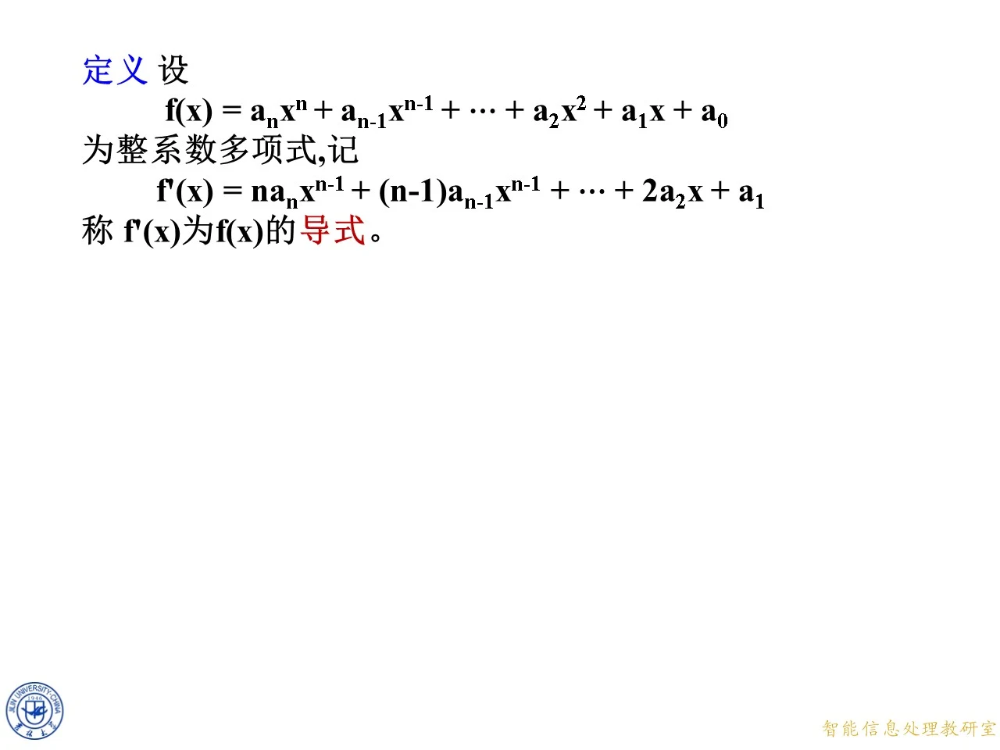
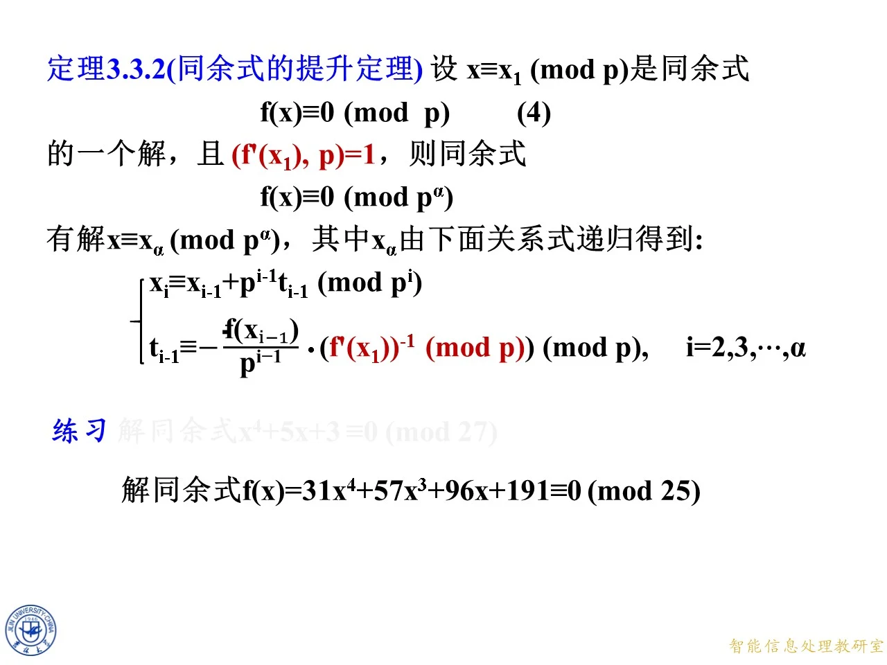
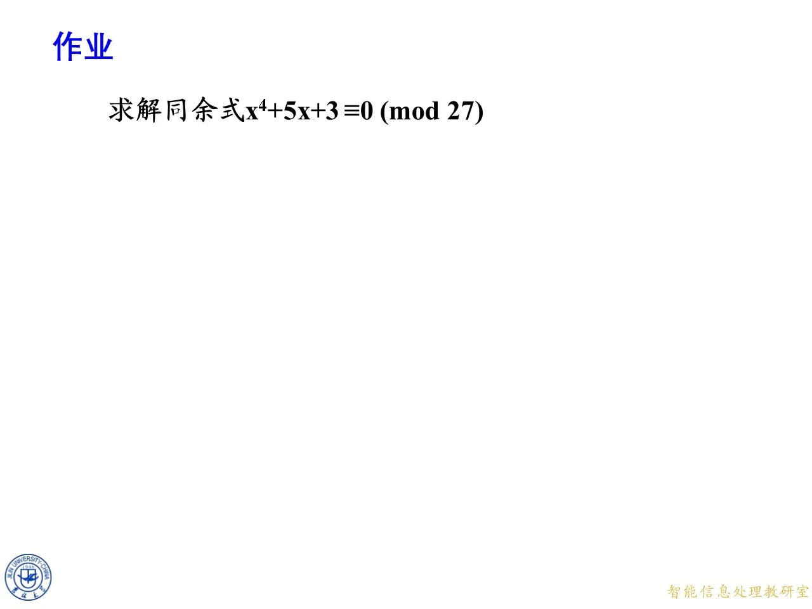

本节在高次同余式已有结论的基础上，学习如何把素数模的解逐步提升为素数幂模的解。先通过一个四次多项式连续提高模的幂次，再抽象出导式、提升公式和完整算法，最后讨论导式不可逆时有多个提升或没有提升的情形。它为一般合数模同余式与中国剩余定理的联合使用做好准备。
连续提升的引例：从模 3 3 3 81 81 81
◆ p.41-42 ｜思考：四个同余式
令 f ( x ) = x 4 + 7 x + 4 f(x)=x^4+7x+4 f ( x ) = x 4 + 7 x + 4 f ( x ) ≡ 0 ( m o d 3 ) , f ( x ) ≡ 0 ( m o d 9 ) , f ( x ) ≡ 0 ( m o d 27 ) , f ( x ) ≡ 0 ( m o d 81 ) .
f(x)\equiv0\pmod3,\quad f(x)\equiv0\pmod9,\quad
f(x)\equiv0\pmod{27},\quad f(x)\equiv0\pmod{81}.
f ( x ) ≡ 0 ( mod 3 ) , f ( x ) ≡ 0 ( mod 9 ) , f ( x ) ≡ 0 ( mod 27 ) , f ( x ) ≡ 0 ( mod 81 ) . 3 , 3 2 , 3 3 , 3 4 3,3^2,3^3,3^4 3 , 3 2 , 3 3 , 3 4
◆ p.43 ｜先研究前两层
本页把问题暂时收缩到模 3 3 3 9 9 9 3 3 3 0 , 1 , 2 0,1,2 0 , 1 , 2 9 9 9 3 3 3
◆ p.44 ｜用同一符号表示多项式
课件把两式简写为 f ( x ) ≡ 0 ( m o d 3 ) f(x)\equiv0\pmod3 f ( x ) ≡ 0 ( mod 3 ) f ( x ) ≡ 0 ( m o d 9 ) f(x)\equiv0\pmod9 f ( x ) ≡ 0 ( mod 9 ) a ≡ b ( m o d m ) a\equiv b\pmod m a ≡ b ( mod m ) f ( a ) ≡ f ( b ) ( m o d m ) f(a)\equiv f(b)\pmod m f ( a ) ≡ f ( b ) ( mod m )
◆ p.45 ｜从大模解回到小模解
蓝色向上箭头表示：若 9 ∣ f ( x ) 9\mid f(x) 9 ∣ f ( x ) 3 ∣ 9 3\mid9 3 ∣ 9 3 ∣ f ( x ) 3\mid f(x) 3 ∣ f ( x ) f ( x ) ≡ 0 ( m o d 9 ) ⟹ f ( x ) ≡ 0 ( m o d 3 ) .
f(x)\equiv0\pmod9\quad\Longrightarrow\quad f(x)\equiv0\pmod3.
f ( x ) ≡ 0 ( mod 9 ) ⟹ f ( x ) ≡ 0 ( mod 3 ) . 9 9 9 3 3 3 3 3 3 9 9 9
◆ p.46-47 ｜解集包含与被划去的反向箭头
记两层解集为 S 3 S_3 S 3 S 9 S_9 S 9 S 9 ⊂ S 3 S_9\subset S_3 S 9 ⊂ S 3 3 3 3 9 9 9
◆ p.48-50 ｜大模解集是小模解集的子集
本页用大括号形状的包含符号再次强调 S 9 ⊂ S 3 S_9\subset S_3 S 9 ⊂ S 3 3 3 3 0 , 1 , 2 0,1,2 0 , 1 , 2
◆ p.51 ｜把箭头理解为筛选
本页的筛选图标把抽象包含关系变成操作：先保留模 3 3 3 9 9 9 3 3 3 r r r x = r + 3 t x=r+3t x = r + 3 t 9 9 9 t = 0 , 1 , 2 t=0,1,2 t = 0 , 1 , 2
◆ p.52 ｜筛选不是无条件的升降
最终帧保留从模 9 9 9 3 3 3 t t t 3 3 3
◆ p.53-63 ｜第一次提升：模 3 3 3 9 9 9
先枚举模 3 3 3 f ( 0 ) = 4 ≡ 1 f(0)=4\equiv1 f ( 0 ) = 4 ≡ 1 f ( 1 ) = 12 ≡ 0 f(1)=12\equiv0 f ( 1 ) = 12 ≡ 0 f ( 2 ) = 34 ≡ 1 ( m o d 3 ) f(2)=34\equiv1\pmod3 f ( 2 ) = 34 ≡ 1 ( mod 3 ) x ≡ 1 ( m o d 3 ) x\equiv1\pmod3 x ≡ 1 ( mod 3 ) 9 9 9 x = 1 + 3 t x=1+3t x = 1 + 3 t ( 1 + 3 t ) 4 = 1 + 4 ( 3 t ) + 6 ( 3 t ) 2 + 4 ( 3 t ) 3 + ( 3 t ) 4 .
(1+3t)^4=1+4(3t)+6(3t)^2+4(3t)^3+(3t)^4.
( 1 + 3 t ) 4 = 1 + 4 ( 3 t ) + 6 ( 3 t ) 2 + 4 ( 3 t ) 3 + ( 3 t ) 4 . 9 9 9 9 9 9 f ( 1 + 3 t ) ≡ 1 + 12 t + 7 + 21 t + 4 = 33 t + 12 ( m o d 9 ) .
f(1+3t)\equiv1+12t+7+21t+4=33t+12\pmod9.
f ( 1 + 3 t ) ≡ 1 + 12 t + 7 + 21 t + 4 = 33 t + 12 ( mod 9 ) . 33 t + 12 ≡ 0 ( m o d 9 ) 33t+12\equiv0\pmod9 33 t + 12 ≡ 0 ( mod 9 ) 3 3 3 11 t ≡ − 4 ( m o d 3 ) 11t\equiv-4\pmod3 11 t ≡ − 4 ( mod 3 ) 2 t ≡ 2 ( m o d 3 ) 2t\equiv2\pmod3 2 t ≡ 2 ( mod 3 ) t ≡ 1 ( m o d 3 ) t\equiv1\pmod3 t ≡ 1 ( mod 3 ) x ≡ 1 + 3 ⋅ 1 ≡ 4 ( m o d 9 ) .
\boxed{x\equiv1+3\cdot1\equiv4\pmod9}.
x ≡ 1 + 3 ⋅ 1 ≡ 4 ( mod 9 ) . 9 9 9
◆ p.64 ｜问号要求核验结论
本页在所得 x ≡ 4 ( m o d 9 ) x\equiv4\pmod9 x ≡ 4 ( mod 9 ) 3 3 3 9 9 9 1 , 4 , 7 1,4,7 1 , 4 , 7 f ( 1 ) = 12 ≡ 3 f(1)=12\equiv3 f ( 1 ) = 12 ≡ 3 f ( 4 ) = 288 ≡ 0 f(4)=288\equiv0 f ( 4 ) = 288 ≡ 0 f ( 7 ) = 2454 ≡ 6 ( m o d 9 ) f(7)=2454\equiv6\pmod9 f ( 7 ) = 2454 ≡ 6 ( mod 9 ) 4 4 4
◆ p.65-69 ｜把同余解写成整数集合
课件列出 x ≡ 1 ( m o d 3 ) x\equiv1\pmod3 x ≡ 1 ( mod 3 ) { … , − 17 , − 14 , − 11 , − 8 , − 5 , − 2 , 1 , 4 , 7 , 10 , 13 , 16 , 19 , 22 , … } ,
\{\ldots,-17,-14,-11,-8,-5,-2,1,4,7,10,13,16,19,22,\ldots\},
{ … , − 17 , − 14 , − 11 , − 8 , − 5 , − 2 , 1 , 4 , 7 , 10 , 13 , 16 , 19 , 22 , … } , x ≡ 4 ( m o d 9 ) x\equiv4\pmod9 x ≡ 4 ( mod 9 ) { … , − 23 , − 14 , − 5 , 4 , 13 , 22 , … } .
\{\ldots,-23,-14,-5,4,13,22,\ldots\}.
{ … , − 23 , − 14 , − 5 , 4 , 13 , 22 , … } . x = 4 + 9 k x=4+9k x = 4 + 9 k x = 1 + 3 ( 1 + 3 k ) x=1+3(1+3k) x = 1 + 3 ( 1 + 3 k )
◆ p.70-71 ｜一个旧剩余类分裂为三个新剩余类
模 9 9 9 x ≡ 1 ( m o d 3 ) x\equiv1\pmod3 x ≡ 1 ( mod 3 ) x ≡ 1 , 4 , 或 7 ( m o d 9 ) .
x\equiv1,4,\text{或 }7\pmod9.
x ≡ 1 , 4 , 或 7 ( mod 9 ) . x = 1 + 3 t x=1+3t x = 1 + 3 t t t t 3 3 3 1 , 4 , 7 1,4,7 1 , 4 , 7 1 1 1 7 7 7 4 4 4
◆ p.72-73 ｜准备提升到模 27 27 27
现在已知 f ( x ) ≡ 0 ( m o d 9 ) f(x)\equiv0\pmod9 f ( x ) ≡ 0 ( mod 9 ) x ≡ 4 ( m o d 9 ) x\equiv4\pmod9 x ≡ 4 ( mod 9 ) f ( x ) ≡ 0 ( m o d 27 ) f(x)\equiv0\pmod{27} f ( x ) ≡ 0 ( mod 27 ) 27 ∣ f ( x ) 27\mid f(x) 27 ∣ f ( x ) 9 ∣ f ( x ) 9\mid f(x) 9 ∣ f ( x ) x ≡ 4 ( m o d 9 ) x\equiv4\pmod9 x ≡ 4 ( mod 9 ) 27 27 27 4 , 13 , 22 4,13,22 4 , 13 , 22
◆ p.74 ｜第二层仍沿用同一筛选原则
筛选图标放在模 9 9 9 27 27 27 r = 4 r=4 r = 4 9 9 9 27 27 27 x = 4 + 9 t x=4+9t x = 4 + 9 t t t t 3 3 3 4 + 9 ( t + 3 ) = 4 + 9 t + 27 4+9(t+3)=4+9t+27 4 + 9 ( t + 3 ) = 4 + 9 t + 27 4 + 9 t 4+9t 4 + 9 t
◆ p.75-83 ｜第二次提升：模 9 9 9 27 27 27
设 x = 4 + 9 t x=4+9t x = 4 + 9 t ( 4 + 9 t ) 4 = 4 4 + 4 ⋅ 4 3 ( 9 t ) + 6 ⋅ 4 2 ( 9 t ) 2 + ⋯ .
(4+9t)^4=4^4+4\cdot4^3(9t)+6\cdot4^2(9t)^2+\cdots.
( 4 + 9 t ) 4 = 4 4 + 4 ⋅ 4 3 ( 9 t ) + 6 ⋅ 4 2 ( 9 t ) 2 + ⋯ . ( 9 t ) 2 (9t)^2 ( 9 t ) 2 27 27 27 f ( 4 + 9 t ) ≡ 4 4 + 4 4 ( 9 t ) + 7 ( 4 + 9 t ) + 4 ( m o d 27 ) .
f(4+9t)\equiv4^4+4^4(9t)+7(4+9t)+4\pmod{27}.
f ( 4 + 9 t ) ≡ 4 4 + 4 4 ( 9 t ) + 7 ( 4 + 9 t ) + 4 ( mod 27 ) . f ( 4 ) = 288 ≡ 18 ( m o d 27 ) f(4)=288\equiv18\pmod{27} f ( 4 ) = 288 ≡ 18 ( mod 27 ) 9 ⋅ 4 4 + 63 = 2367 ≡ 18 ( m o d 27 ) 9\cdot4^4+63=2367\equiv18\pmod{27} 9 ⋅ 4 4 + 63 = 2367 ≡ 18 ( mod 27 ) 18 t + 18 ≡ 0 ( m o d 27 ) ⟺ 2 t ≡ − 2 ( m o d 3 ) ⟺ t ≡ 2 ( m o d 3 ) .
18t+18\equiv0\pmod{27}
\Longleftrightarrow 2t\equiv-2\pmod3
\Longleftrightarrow t\equiv2\pmod3.
18 t + 18 ≡ 0 ( mod 27 ) ⟺ 2 t ≡ − 2 ( mod 3 ) ⟺ t ≡ 2 ( mod 3 ) . 9 9 9 x = 4 + 9 t x=4+9t x = 4 + 9 t x ≡ 4 + 9 ⋅ 2 = 22 ( m o d 27 ) .
\boxed{x\equiv4+9\cdot2=22\pmod{27}}.
x ≡ 4 + 9 ⋅ 2 = 22 ( mod 27 ) .
◆ p.84-86 ｜新解集继续缩小
x ≡ 4 ( m o d 9 ) x\equiv4\pmod9 x ≡ 4 ( mod 9 ) { … , − 41 , − 32 , − 23 , − 14 , − 5 , 4 , 13 , 22 , 31 , 40 , 49 , 58 , 67 , … } ,
\{\ldots,-41,-32,-23,-14,-5,4,13,22,31,40,49,58,67,\ldots\},
{ … , − 41 , − 32 , − 23 , − 14 , − 5 , 4 , 13 , 22 , 31 , 40 , 49 , 58 , 67 , … } , x ≡ 22 ( m o d 27 ) x\equiv22\pmod{27} x ≡ 22 ( mod 27 ) { … , − 59 , − 32 , − 5 , 22 , 49 , 76 , … } .
\{\ldots,-59,-32,-5,22,49,76,\ldots\}.
{ … , − 59 , − 32 , − 5 , 22 , 49 , 76 , … } . 22 + 27 k = 4 + 9 ( 2 + 3 k ) 22+27k=4+9(2+3k) 22 + 27 k = 4 + 9 ( 2 + 3 k ) 22 , 49 , 76 22,49,76 22 , 49 , 76 9 9 9 27 27 27
◆ p.87-88 ｜三个候选中只有 22 22 22
旧类 x ≡ 4 ( m o d 9 ) x\equiv4\pmod9 x ≡ 4 ( mod 9 ) 27 27 27 x ≡ 4 , 13 , 22 ( m o d 27 ) .
x\equiv4,13,22\pmod{27}.
x ≡ 4 , 13 , 22 ( mod 27 ) . f ( 4 ) = 288 ≡ 18 f(4)=288\equiv18 f ( 4 ) = 288 ≡ 18 f ( 13 ) = 28656 ≡ 9 f(13)=28656\equiv9 f ( 13 ) = 28656 ≡ 9 f ( 22 ) = 234414 ≡ 0 ( m o d 27 ) f(22)=234414\equiv0\pmod{27} f ( 22 ) = 234414 ≡ 0 ( mod 27 ) t ≡ 2 ( m o d 3 ) t\equiv2\pmod3 t ≡ 2 ( mod 3 )
◆ p.89-90 ｜准备提升到模 81 81 81
第三层以 x ≡ 22 ( m o d 27 ) x\equiv22\pmod{27} x ≡ 22 ( mod 27 ) f ( x ) ≡ 0 ( m o d 81 ) f(x)\equiv0\pmod{81} f ( x ) ≡ 0 ( mod 81 ) 81 ∣ f ( x ) ⇒ 27 ∣ f ( x ) 81\mid f(x)\Rightarrow27\mid f(x) 81 ∣ f ( x ) ⇒ 27 ∣ f ( x ) x = 22 + 27 t x=22+27t x = 22 + 27 t 81 81 81 t = 0 , 1 , 2 t=0,1,2 t = 0 , 1 , 2 22 , 49 , 76 22,49,76 22 , 49 , 76 22 22 22
◆ p.91 ｜第三次筛选的设置
本页只增加筛选图标，但参数已经确定：旧根为 22 22 22 27 27 27 81 81 81 27 t 27t 27 t t t t 3 3 3 3 i − 1 3^{i-1} 3 i − 1 3 i 3^i 3 i
◆ p.92-97 ｜第三次代入并舍去高次项
设 x = 22 + 27 t x=22+27t x = 22 + 27 t ( 27 t ) 2 (27t)^2 ( 27 t ) 2 81 81 81 f ( 22 + 27 t ) ≡ 22 4 + 4 ⋅ 22 3 ( 27 t ) + 7 ( 22 + 27 t ) + 4 ( m o d 81 ) .
f(22+27t)\equiv22^4+4\cdot22^3(27t)+7(22+27t)+4\pmod{81}.
f ( 22 + 27 t ) ≡ 2 2 4 + 4 ⋅ 2 2 3 ( 27 t ) + 7 ( 22 + 27 t ) + 4 ( mod 81 ) . f ( 22 + 27 t ) ≡ f ( 22 ) + f ′ ( 22 ) 27 t ( m o d 81 ) ,
f(22+27t)\equiv f(22)+f'(22)27t\pmod{81},
f ( 22 + 27 t ) ≡ f ( 22 ) + f ′ ( 22 ) 27 t ( mod 81 ) , f ( 22 ) = 234414 = 81 ⋅ 2894 f(22)=234414=81\cdot2894 f ( 22 ) = 234414 = 81 ⋅ 2894 f ′ ( 22 ) = 42599 f'(22)=42599 f ′ ( 22 ) = 42599
◆ p.98-100 ｜一次项为何化成 54 t 54t 54 t
课件分别处理两个一次项。因为 27 t 27t 27 t 27 27 27 3 3 3 4 ⋅ 22 3 ≡ 1 ( m o d 3 ) 4\cdot22^3\equiv1\pmod3 4 ⋅ 2 2 3 ≡ 1 ( mod 3 ) 7 ≡ 1 ( m o d 3 ) 7\equiv1\pmod3 7 ≡ 1 ( mod 3 ) 4 ⋅ 22 3 ( 27 t ) ≡ 27 t ( m o d 81 ) , 7 ( 27 t ) ≡ 27 t ( m o d 81 ) .
4\cdot22^3(27t)\equiv27t\pmod{81},\qquad 7(27t)\equiv27t\pmod{81}.
4 ⋅ 2 2 3 ( 27 t ) ≡ 27 t ( mod 81 ) , 7 ( 27 t ) ≡ 27 t ( mod 81 ) . 54 t 54t 54 t f ′ ( 22 ) = 42599 ≡ 2 ( m o d 3 ) f'(22)=42599\equiv2\pmod3 f ′ ( 22 ) = 42599 ≡ 2 ( mod 3 ) f ′ ( 22 ) 27 t ≡ 54 t ( m o d 81 ) f'(22)27t\equiv54t\pmod{81} f ′ ( 22 ) 27 t ≡ 54 t ( mod 81 ) 3 3 3 27 27 27
◆ p.101-102 ｜合并常数与一次项
常数部分满足 f ( 22 ) ≡ 0 ( m o d 81 ) f(22)\equiv0\pmod{81} f ( 22 ) ≡ 0 ( mod 81 ) f ( 22 + 27 t ) ≡ 54 t ( m o d 81 ) .
f(22+27t)\equiv54t\pmod{81}.
f ( 22 + 27 t ) ≡ 54 t ( mod 81 ) . 22 4 ≡ 4 ( m o d 81 ) 22^4\equiv4\pmod{81} 2 2 4 ≡ 4 ( mod 81 ) 4 + 7 ⋅ 22 + 4 = 162 = 2 ⋅ 81 4+7\cdot22+4=162=2\cdot81 4 + 7 ⋅ 22 + 4 = 162 = 2 ⋅ 81 54 t + 162 ≡ 54 t ( m o d 81 ) 54t+162\equiv54t\pmod{81} 54 t + 162 ≡ 54 t ( mod 81 ) f ( 22 ) f(22) f ( 22 ) f ′ ( 22 ) f'(22) f ′ ( 22 )
◆ p.103-106 ｜第三次提升的答案
由 54 t ≡ 0 ( m o d 81 ) 54t\equiv0\pmod{81} 54 t ≡ 0 ( mod 81 ) 27 27 27 2 t ≡ 0 ( m o d 3 ) 2t\equiv0\pmod3 2 t ≡ 0 ( mod 3 ) 2 2 2 3 3 3 t ≡ 0 ( m o d 3 ) t\equiv0\pmod3 t ≡ 0 ( mod 3 ) x ≡ 22 + 27 ⋅ 0 ≡ 22 ( m o d 81 ) .
\boxed{x\equiv22+27\cdot0\equiv22\pmod{81}}.
x ≡ 22 + 27 ⋅ 0 ≡ 22 ( mod 81 ) . 22 + 27 t 22+27t 22 + 27 t t = 0 t=0 t = 0 27 27 27 81 81 81
◆ p.107 ｜三次提升的集合图与总结果
旧类 x ≡ 22 ( m o d 27 ) x\equiv22\pmod{27} x ≡ 22 ( mod 27 ) 81 81 81 22 , 49 , 76 22,49,76 22 , 49 , 76 f ( 22 ) ≡ 0 , f ( 49 ) = 5765148 ≡ 54 , f ( 76 ) = 33362712 ≡ 27 ( m o d 81 ) ,
f(22)\equiv0,\qquad f(49)=5765148\equiv54,\qquad f(76)=33362712\equiv27\pmod{81},
f ( 22 ) ≡ 0 , f ( 49 ) = 5765148 ≡ 54 , f ( 76 ) = 33362712 ≡ 27 ( mod 81 ) , x ≡ 22 ( m o d 81 ) x\equiv22\pmod{81} x ≡ 22 ( mod 81 ) x ≡ 1 ( m o d 3 ) , x ≡ 4 ( m o d 9 ) , x ≡ 22 ( m o d 27 ) , x ≡ 22 ( m o d 81 ) .
x\equiv1\pmod3,\quad x\equiv4\pmod9,\quad
x\equiv22\pmod{27},\quad x\equiv22\pmod{81}.
x ≡ 1 ( mod 3 ) , x ≡ 4 ( mod 9 ) , x ≡ 22 ( mod 27 ) , x ≡ 22 ( mod 81 ) .
拓展 （课件外补充）：这条链也可用导式快速复核。f ′ ( x ) = 4 x 3 + 7 f'(x)=4x^3+7 f ′ ( x ) = 4 x 3 + 7 1 , 4 , 22 1,4,22 1 , 4 , 22 3 3 3 2 2 2 t ≡ − f ( r ) / 3 i − 1 ⋅ [ f ′ ( r ) ] − 1 ( m o d 3 ) t\equiv-f(r)/3^{i-1}\cdot[f'(r)]^{-1}\pmod3 t ≡ − f ( r ) / 3 i − 1 ⋅ [ f ′ ( r ) ] − 1 ( mod 3 ) p p p
从一层提升到一般提升公式
◆ p.108-111 ｜素数幂模的提升链
课件把引例推广为
f ( x ) ≡ 0 ( m o d p ) ⟶ ⋯ ⟶ f ( x ) ≡ 0 ( m o d p i − 1 ) ⟶ f ( x ) ≡ 0 ( m o d p i ) ⟶ ⋯ ⟶ f ( x ) ≡ 0 ( m o d p n ) .
f(x)\equiv0\pmod p\ \longrightarrow\ \cdots\ \longrightarrow\
f(x)\equiv0\pmod{p^{i-1}}\ \longrightarrow\ f(x)\equiv0\pmod{p^i}
\ \longrightarrow\ \cdots\ \longrightarrow\ f(x)\equiv0\pmod{p^n}.
f ( x ) ≡ 0 ( mod p ) ⟶ ⋯ ⟶ f ( x ) ≡ 0 ( mod p i − 1 ) ⟶ f ( x ) ≡ 0 ( mod p i ) ⟶ ⋯ ⟶ f ( x ) ≡ 0 ( mod p n ) . p p p i ≥ 2 i\ge2 i ≥ 2 n n n p i − 1 p^{i-1} p i − 1 p i p^i p i
◆ p.112-115 ｜旧方程、新方程与整系数多项式
设
f ( x ) = a n x n + a n − 1 x n − 1 + ⋯ + a 2 x 2 + a 1 x + a 0
f(x)=a_nx^n+a_{n-1}x^{n-1}+\cdots+a_2x^2+a_1x+a_0
f ( x ) = a n x n + a n − 1 x n − 1 + ⋯ + a 2 x 2 + a 1 x + a 0 f ( x ) ≡ 0 ( m o d p i − 1 ) f(x)\equiv0\pmod{p^{i-1}} f ( x ) ≡ 0 ( mod p i − 1 ) x ≡ x i − 1 ( m o d p i − 1 ) x\equiv x_{i-1}\pmod{p^{i-1}} x ≡ x i − 1 ( mod p i − 1 ) f ( x ) ≡ 0 ( m o d p i ) f(x)\equiv0\pmod{p^i} f ( x ) ≡ 0 ( mod p i ) x ≡ x i ( m o d p i ) x\equiv x_i\pmod{p^i} x ≡ x i ( mod p i )
◆ p.116 ｜新旧解集的基本包含关系
本页再次标出新解集约化后属于旧解集。因为 p i − 1 ∣ p i p^{i-1}\mid p^i p i − 1 ∣ p i p i ∣ f ( x ) p^i\mid f(x) p i ∣ f ( x ) p i − 1 ∣ f ( x ) p^{i-1}\mid f(x) p i − 1 ∣ f ( x ) x i x_i x i x i − 1 x_{i-1} x i − 1 p i − 1 p^{i-1} p i − 1 p i p^i p i
◆ p.117-119 ｜小结论一：函数值含旧模因子
x i − 1 x_{i-1} x i − 1 f ( x i − 1 ) ≡ 0 ( m o d p i − 1 ) f(x_{i-1})\equiv0\pmod{p^{i-1}} f ( x i − 1 ) ≡ 0 ( mod p i − 1 ) p i − 1 ∣ f ( x i − 1 ) .
p^{i-1}\mid f(x_{i-1}).
p i − 1 ∣ f ( x i − 1 ) . f ( x i − 1 ) / p i − 1 f(x_{i-1})/p^{i-1} f ( x i − 1 ) / p i − 1 p p p p i − 1 p^{i-1} p i − 1
◆ p.120-123 ｜小结论二：新根仍是旧方程的解
若 x i x_i x i p i ∣ f ( x i ) p^i\mid f(x_i) p i ∣ f ( x i ) p i − 1 ∣ f ( x i ) p^{i-1}\mid f(x_i) p i − 1 ∣ f ( x i ) f ( x i ) ≡ 0 ( m o d p i − 1 ) f(x_i)\equiv0\pmod{p^{i-1}} f ( x i ) ≡ 0 ( mod p i − 1 ) x i x_i x i x i − 1 x_{i-1} x i − 1 x i ≡ x i − 1 ( m o d p i − 1 ) .
x_i\equiv x_{i-1}\pmod{p^{i-1}}.
x i ≡ x i − 1 ( mod p i − 1 ) . x i ≡ x 1 ( m o d p ) x_i\equiv x_1\pmod p x i ≡ x 1 ( mod p ) p p p
◆ p.124 ｜所有提升根共享最初的模 p p p
本页把第二条结论单独压缩为 x i ≡ x 1 ( m o d p ) x_i\equiv x_1\pmod p x i ≡ x 1 ( mod p ) x i x_i x i x i − 1 x_{i-1} x i − 1 p i − 1 p^{i-1} p i − 1 p p p x 1 x_1 x 1 p n p^n p n
◆ p.125-126 ｜引入提升参数 t t t
由 x i ≡ x i − 1 ( m o d p i − 1 ) x_i\equiv x_{i-1}\pmod{p^{i-1}} x i ≡ x i − 1 ( mod p i − 1 ) x i = x i − 1 + t p i − 1 , t ∈ Z .
x_i=x_{i-1}+t p^{i-1},\qquad t\in\mathbb Z.
x i = x i − 1 + t p i − 1 , t ∈ Z . ∑ j = 0 n a j ( x i − 1 + t p i − 1 ) j ≡ 0 ( m o d p i ) .
\sum_{j=0}^{n}a_j(x_{i-1}+t p^{i-1})^j\equiv0\pmod{p^i}.
j = 0 ∑ n a j ( x i − 1 + t p i − 1 ) j ≡ 0 ( mod p i ) . p i p^i p i t t t t + p t+p t + p t = 0 , 1 , … , p − 1 t=0,1,\ldots,p-1 t = 0 , 1 , … , p − 1 t t t
◆ p.127-129 ｜展开最高次项
对一般项使用二项式定理：
( r + u ) j = r j + j r j − 1 u + ( j 2 ) r j − 2 u 2 + ⋯ + u j .
(r+u)^j=r^j+jr^{j-1}u+\binom j2r^{j-2}u^2+\cdots+u^j.
( r + u ) j = r j + j r j − 1 u + ( 2 j ) r j − 2 u 2 + ⋯ + u j . a n ( x i − 1 + t p i − 1 ) n a_n(x_{i-1}+t p^{i-1})^n a n ( x i − 1 + t p i − 1 ) n r = x i − 1 r=x_{i-1} r = x i − 1 u = t p i − 1 u=t p^{i-1} u = t p i − 1 p i p^i p i
◆ p.130 ｜最高次项只保留前两项
在上述展开中，任何含 u 2 = ( t p i − 1 ) 2 u^2=(t p^{i-1})^2 u 2 = ( t p i − 1 ) 2 p 2 ( i − 1 ) p^{2(i-1)} p 2 ( i − 1 ) i ≥ 2 i\ge2 i ≥ 2 2 ( i − 1 ) ≥ i 2(i-1)\ge i 2 ( i − 1 ) ≥ i 0 ( m o d p i ) 0\pmod{p^i} 0 ( mod p i ) a n ( r + u ) n ≡ a n r n + a n n r n − 1 u ( m o d p i ) ,
a_n(r+u)^n\equiv a_n r^n+a_nnr^{n-1}u\pmod{p^i},
a n ( r + u ) n ≡ a n r n + a n n r n − 1 u ( mod p i ) , u = t p i − 1 u=t p^{i-1} u = t p i − 1
◆ p.131-132 ｜展开次高次项
对 a n − 1 ( r + u ) n − 1 a_{n-1}(r+u)^{n-1} a n − 1 ( r + u ) n − 1 a n − 1 r n − 1 a_{n-1}r^{n-1} a n − 1 r n − 1 a n − 1 ( n − 1 ) r n − 2 u a_{n-1}(n-1)r^{n-2}u a n − 1 ( n − 1 ) r n − 2 u p 2 ( i − 1 ) p^{2(i-1)} p 2 ( i − 1 ) p i p^i p i n , n − 1 , … , 2 , 1 n,n-1,\ldots,2,1 n , n − 1 , … , 2 , 1
◆ p.133 ｜次高次项也只剩两项
本页把次高次项的红色部分删去，得到与最高次项相同的两行结构。到这一步应形成统一认识：无论原多项式次数多高，模 p i p^i p i a j ( r + u ) j a_j(r+u)^j a j ( r + u ) j
◆ p.134 ｜继续处理中间各项
课件用省略号表示对 a n − 2 , … , a 3 a_{n-2},\ldots,a_3 a n − 2 , … , a 3 j ≥ 2 j\ge2 j ≥ 2 a j ( r + u ) j ≡ a j r j + a j j r j − 1 u ( m o d p i ) ,
a_j(r+u)^j\equiv a_jr^j+a_jjr^{j-1}u\pmod{p^i},
a j ( r + u ) j ≡ a j r j + a j j r j − 1 u ( mod p i ) , u 2 u^2 u 2 a 1 ( r + u ) = a 1 r + a 1 u a_1(r+u)=a_1r+a_1u a 1 ( r + u ) = a 1 r + a 1 u a 0 a_0 a 0
◆ p.135-136 ｜二次项与一次项补齐
二次项展开为
a 2 ( r + u ) 2 = a 2 r 2 + 2 a 2 r u + a 2 u 2 ≡ a 2 r 2 + 2 a 2 r u ( m o d p i ) ,
a_2(r+u)^2=a_2r^2+2a_2ru+a_2u^2
\equiv a_2r^2+2a_2ru\pmod{p^i},
a 2 ( r + u ) 2 = a 2 r 2 + 2 a 2 r u + a 2 u 2 ≡ a 2 r 2 + 2 a 2 r u ( mod p i ) , a 2 u 2 a_2u^2 a 2 u 2 p 2 ( i − 1 ) p^{2(i-1)} p 2 ( i − 1 ) a 1 ( r + u ) a_1(r+u) a 1 ( r + u ) a 0 a_0 a 0 p i p^i p i
◆ p.137-138 ｜将各项合并为统一结构
本组动画在版面上出现文字重叠，但可辨认的操作是把各黑色常数项与一次增量项合并，删去已被证明为零的红项。统一写成 r = x i − 1 r=x_{i-1} r = x i − 1 u = t p i − 1 u=t p^{i-1} u = t p i − 1 ∑ j = 0 n a j r j + ( ∑ j = 1 n j a j r j − 1 ) u ≡ 0 ( m o d p i ) .
\sum_{j=0}^{n}a_jr^j+\left(\sum_{j=1}^{n}ja_jr^{j-1}\right)u
\equiv0\pmod{p^i}.
j = 0 ∑ n a j r j + ( j = 1 ∑ n j a j r j − 1 ) u ≡ 0 ( mod p i ) .
◆ p.139 ｜检查删项所需的指数条件
本页保留合并过程中的版面，核心检查点仍是 2 ( i − 1 ) ≥ i 2(i-1)\ge i 2 ( i − 1 ) ≥ i p p p p 2 p^2 p 2 i = 2 i=2 i = 2 p 2 p^2 p 2 p i − 1 p^{i-1} p i − 1 p 2 i − 2 p^{2i-2} p 2 i − 2 p i p^i p i
◆ p.140 ｜为重新分组作准备
本页给保留下来的展开式加底色，提示下一步不是继续展开，而是重新分组。一组是不含 u u u f ( r ) f(r) f ( r ) u u u t p i − 1 t p^{i-1} t p i − 1
◆ p.141-145 ｜按是否含增量重新分组
将常数部分与一次增量部分分别收集，得到
( a n r n + a n − 1 r n − 1 + ⋯ + a 2 r 2 + a 1 r + a 0 ) + ( n a n r n − 1 + ( n − 1 ) a n − 1 r n − 2 + ⋯ + 2 a 2 r + a 1 ) u ≡ 0 ( m o d p i ) .
\begin{aligned}
&(a_nr^n+a_{n-1}r^{n-1}+\cdots+a_2r^2+a_1r+a_0)\\
&\quad+(na_nr^{n-1}+(n-1)a_{n-1}r^{n-2}+\cdots+2a_2r+a_1)u
\equiv0\pmod{p^i}.
\end{aligned}
( a n r n + a n − 1 r n − 1 + ⋯ + a 2 r 2 + a 1 r + a 0 ) + ( n a n r n − 1 + ( n − 1 ) a n − 1 r n − 2 + ⋯ + 2 a 2 r + a 1 ) u ≡ 0 ( mod p i ) . f ( r ) f(r) f ( r ) a 1 a_1 a 1 a 0 a_0 a 0
◆ p.146-148 ｜把二项式系数写成次数
课件把 ( n 1 ) , ( n − 1 1 ) , … , ( 2 1 ) \binom n1,\binom{n-1}1,\ldots,\binom21 ( 1 n ) , ( 1 n − 1 ) , … , ( 1 2 ) n , n − 1 , … , 2 n,n-1,\ldots,2 n , n − 1 , … , 2 n a n r n − 1 + ( n − 1 ) a n − 1 r n − 2 + ⋯ + 2 a 2 r + a 1 .
na_nr^{n-1}+(n-1)a_{n-1}r^{n-2}+\cdots+2a_2r+a_1.
n a n r n − 1 + ( n − 1 ) a n − 1 r n − 2 + ⋯ + 2 a 2 r + a 1 . ( j 1 ) = j \binom j1=j ( 1 j ) = j u = t p i − 1 u=t p^{i-1} u = t p i − 1 p i p^i p i t t t
◆ p.149-150 ｜识别出两部分的名称
绿色框分别圈出不含增量的多项式与增量的一次系数，提示它们应分别记作 f ( r ) f(r) f ( r ) r r r u = t p i − 1 u=t p^{i-1} u = t p i − 1
◆ p.151 ｜第一部分就是 f ( x i − 1 ) f(x_{i-1}) f ( x i − 1 )
按 f f f r = x i − 1 r=x_{i-1} r = x i − 1 a n x i − 1 n + a n − 1 x i − 1 n − 1 + ⋯ + a 1 x i − 1 + a 0 = f ( x i − 1 ) .
a_nx_{i-1}^n+a_{n-1}x_{i-1}^{n-1}+\cdots+a_1x_{i-1}+a_0=f(x_{i-1}).
a n x i − 1 n + a n − 1 x i − 1 n − 1 + ⋯ + a 1 x i − 1 + a 0 = f ( x i − 1 ) . p i − 1 p^{i-1} p i − 1 x 1 x_1 x 1
◆ p.152 ｜第二部分记作导式值
第二组记为 f ′ ( x i − 1 ) f'(x_{i-1}) f ′ ( x i − 1 ) f ( x i − 1 ) + f ′ ( x i − 1 ) t p i − 1 ≡ 0 ( m o d p i ) .
f(x_{i-1})+f'(x_{i-1})t p^{i-1}\equiv0\pmod{p^i}.
f ( x i − 1 ) + f ′ ( x i − 1 ) t p i − 1 ≡ 0 ( mod p i ) . f ′ f' f ′ r ≡ s ( m o d p ) r\equiv s\pmod p r ≡ s ( mod p ) f ′ ( r ) ≡ f ′ ( s ) ( m o d p ) f'(r)\equiv f'(s)\pmod p f ′ ( r ) ≡ f ′ ( s ) ( mod p ) f ′ f' f ′
◆ p.153 ｜定义：整系数多项式的导式
对 f ( x ) = ∑ j = 0 n a j x j f(x)=\sum_{j=0}^{n}a_jx^j f ( x ) = ∑ j = 0 n a j x j f ′ ( x ) = ∑ j = 1 n j a j x j − 1 = n a n x n − 1 + ( n − 1 ) a n − 1 x n − 2 + ⋯ + 2 a 2 x + a 1 .
f'(x)=\sum_{j=1}^{n}ja_jx^{j-1}
=na_nx^{n-1}+(n-1)a_{n-1}x^{n-2}+\cdots+2a_2x+a_1.
f ′ ( x ) = j = 1 ∑ n j a j x j − 1 = n a n x n − 1 + ( n − 1 ) a n − 1 x n − 2 + ⋯ + 2 a 2 x + a 1 . f ( x ) = x 4 + 7 x + 4 f(x)=x^4+7x+4 f ( x ) = x 4 + 7 x + 4 f ′ ( x ) = 4 x 3 + 7 f'(x)=4x^3+7 f ′ ( x ) = 4 x 3 + 7 ( n − 1 ) a n − 1 x n − 2 (n-1)a_{n-1}x^{n-2} ( n − 1 ) a n − 1 x n − 2 n − 1 n-1 n − 1 n − 2 n-2 n − 2
◆ p.154-157 ｜得到模 p p p
一般提升条件现在写为
f ( x i − 1 ) + f ′ ( x i − 1 ) t p i − 1 ≡ 0 ( m o d p i ) .
f(x_{i-1})+f'(x_{i-1})t p^{i-1}\equiv0\pmod{p^i}.
f ( x i − 1 ) + f ′ ( x i − 1 ) t p i − 1 ≡ 0 ( mod p i ) . p i − 1 ∣ f ( x i − 1 ) p^{i-1}\mid f(x_{i-1}) p i − 1 ∣ f ( x i − 1 ) p i − 1 p^{i-1} p i − 1 f ′ ( x i − 1 ) t ≡ − f ( x i − 1 ) p i − 1 ( m o d p ) .
\boxed{f'(x_{i-1})t\equiv-\frac{f(x_{i-1})}{p^{i-1}}\pmod p}.
f ′ ( x i − 1 ) t ≡ − p i − 1 f ( x i − 1 ) ( mod p ) . p i p^i p i p p p

课件原图 · 10月9日授课 · 第 161 页 查看前后已收录原页 → 导式可逆与不可逆的两种情形
◆ p.158-160 ｜导式可逆时唯一求出 t t t
若 gcd ( f ′ ( x i − 1 ) , p ) = 1 \gcd(f'(x_{i-1}),p)=1 g cd( f ′ ( x i − 1 ) , p ) = 1 f ′ ( x i − 1 ) f'(x_{i-1}) f ′ ( x i − 1 ) p p p u u u f ′ ( x i − 1 ) u ≡ 1 ( m o d p ) f'(x_{i-1})u\equiv1\pmod p f ′ ( x i − 1 ) u ≡ 1 ( mod p ) t ≡ − f ( x i − 1 ) p i − 1 u ( m o d p ) .
t\equiv-\frac{f(x_{i-1})}{p^{i-1}}u\pmod p.
t ≡ − p i − 1 f ( x i − 1 ) u ( mod p ) . f ′ ( x i − 1 ) − 1 ( m o d p ) f'(x_{i-1})^{-1}\pmod p f ′ ( x i − 1 ) − 1 ( mod p ) p p p
◆ p.161-165 ｜导式可用最初根 x 1 x_1 x 1
由 x i − 1 ≡ x 1 ( m o d p ) x_{i-1}\equiv x_1\pmod p x i − 1 ≡ x 1 ( mod p ) f ′ ( x i − 1 ) ≡ f ′ ( x 1 ) ( m o d p ) , [ f ′ ( x i − 1 ) ] − 1 ≡ [ f ′ ( x 1 ) ] − 1 ( m o d p ) .
f'(x_{i-1})\equiv f'(x_1)\pmod p,
\qquad [f'(x_{i-1})]^{-1}\equiv[f'(x_1)]^{-1}\pmod p.
f ′ ( x i − 1 ) ≡ f ′ ( x 1 ) ( mod p ) , [ f ′ ( x i − 1 ) ] − 1 ≡ [ f ′ ( x 1 ) ] − 1 ( mod p ) . f ′ ( x 1 ) − 1 ( m o d p ) f'(x_1)^{-1}\pmod p f ′ ( x 1 ) − 1 ( mod p ) f ( x i − 1 ) ≡ f ( x 1 ) ( m o d p ) f(x_{i-1})\equiv f(x_1)\pmod p f ( x i − 1 ) ≡ f ( x 1 ) ( mod p ) f ( x i − 1 ) / p i − 1 f(x_{i-1})/p^{i-1} f ( x i − 1 ) / p i − 1 p p p
◆ p.166-168 ｜思考：分子能否换成 f ( x 1 ) f(x_1) f ( x 1 )
答案是不能。已知 x 1 x_1 x 1 p p p p ∣ f ( x 1 ) p\mid f(x_1) p ∣ f ( x 1 ) p i − 1 ∣ f ( x 1 ) p^{i-1}\mid f(x_1) p i − 1 ∣ f ( x 1 ) x i − 1 x_{i-1} x i − 1 p i − 1 p^{i-1} p i − 1 f ( x i − 1 ) / p i − 1 f(x_{i-1})/p^{i-1} f ( x i − 1 ) / p i − 1 gcd ( f ′ ( x 1 ) , p ) = 1 \gcd(f'(x_1),p)=1 g cd( f ′ ( x 1 ) , p ) = 1 x 2 = 4 x_2=4 x 2 = 4 27 27 27 f ( 4 ) / 9 = 32 f(4)/9=32 f ( 4 ) /9 = 32 f ( 1 ) / 9 = 12 / 9 f(1)/9=12/9 f ( 1 ) /9 = 12/9
◆ p.169-170 ｜可逆分支的新根与不可逆问题
求得 t t t x ≡ x i = x i − 1 + t p i − 1 ( m o d p i ) ,
\boxed{x\equiv x_i=x_{i-1}+t p^{i-1}\pmod{p^i}},
x ≡ x i = x i − 1 + t p i − 1 ( mod p i ) , f ( x ) ≡ 0 ( m o d p i ) f(x)\equiv0\pmod{p^i} f ( x ) ≡ 0 ( mod p i ) gcd ( f ′ ( x 1 ) , p ) > 1 \gcd(f'(x_1),p)>1 g cd( f ′ ( x 1 ) , p ) > 1 p p p p ∣ f ′ ( x 1 ) p\mid f'(x_1) p ∣ f ′ ( x 1 ) f ′ ( x i − 1 ) ≡ 0 ( m o d p ) f'(x_{i-1})\equiv0\pmod p f ′ ( x i − 1 ) ≡ 0 ( mod p )
◆ p.171-174 ｜不可逆分支：可能无解，也可能有 p p p
令 A = f ( x i − 1 ) / p i − 1 A=f(x_{i-1})/p^{i-1} A = f ( x i − 1 ) / p i − 1 D = f ′ ( x i − 1 ) D=f'(x_{i-1}) D = f ′ ( x i − 1 ) A + D t ≡ 0 ( m o d p ) .
A+Dt\equiv0\pmod p.
A + D t ≡ 0 ( mod p ) . D ≡ 0 ( m o d p ) D\equiv0\pmod p D ≡ 0 ( mod p ) A ≢ 0 ( m o d p ) A\not\equiv0\pmod p A ≡ 0 ( mod p ) t t t A ≡ 0 ( m o d p ) A\equiv0\pmod p A ≡ 0 ( mod p ) t = 0 , 1 , … , p − 1 t=0,1,\ldots,p-1 t = 0 , 1 , … , p − 1 p p p p i p^i p i p i p^i p i 1 1 1 p ∣ f ( x i − 1 ) p\mid f(x_{i-1}) p ∣ f ( x i − 1 ) p i ∤ f ( x i − 1 ) p^i\nmid f(x_{i-1}) p i ∤ f ( x i − 1 ) p i ∣ f ( x i − 1 ) p^i\mid f(x_{i-1}) p i ∣ f ( x i − 1 )
◆ p.175 ｜修正后的不可逆分支总结
本页仍保留上一页的错误除法版面，因此不沿用其公式，而沿用已经严格推出的一次条件。实际计算只需两步：先算整数 A = f ( x i − 1 ) / p i − 1 A=f(x_{i-1})/p^{i-1} A = f ( x i − 1 ) / p i − 1 A A A p p p D ≡ 0 ( m o d p ) D\equiv0\pmod p D ≡ 0 ( mod p ) p p p
定理 3.3.2 与提升算法
◆ p.176-177 ｜定理 3.3.2（同余式的提升定理）
设 f f f x ≡ x 1 ( m o d p ) x\equiv x_1\pmod p x ≡ x 1 ( mod p ) f ( x ) ≡ 0 ( m o d p ) f(x)\equiv0\pmod p f ( x ) ≡ 0 ( mod p ) gcd ( f ′ ( x 1 ) , p ) = 1 \gcd(f'(x_1),p)=1 g cd( f ′ ( x 1 ) , p ) = 1 α ≥ 1 \alpha\ge1 α ≥ 1 f ( x ) ≡ 0 ( m o d p α ) f(x)\equiv0\pmod{p^\alpha} f ( x ) ≡ 0 ( mod p α ) x ≡ x α ( m o d p α ) x\equiv x_\alpha\pmod{p^\alpha} x ≡ x α ( mod p α ) x i ≡ x i − 1 + p i − 1 t i − 1 ( m o d p i ) ,
x_i\equiv x_{i-1}+p^{i-1}t_{i-1}\pmod{p^i},
x i ≡ x i − 1 + p i − 1 t i − 1 ( mod p i ) , t i − 1 ≡ − f ( x i − 1 ) p i − 1 ( f ′ ( x 1 ) ) − 1 ( m o d p ) , i = 2 , 3 , … , α .
t_{i-1}\equiv-\frac{f(x_{i-1})}{p^{i-1}}
\bigl(f'(x_1)\bigr)^{-1}\pmod p,
\qquad i=2,3,\ldots,\alpha.
t i − 1 ≡ − p i − 1 f ( x i − 1 ) ( f ′ ( x 1 ) ) − 1 ( mod p ) , i = 2 , 3 , … , α . 拓展 （课件外补充）：归纳证明如下。i = 1 i=1 i = 1 p i − 1 p^{i-1} p i − 1 x i − 1 x_{i-1} x i − 1 t i − 1 t_{i-1} t i − 1 p i p^i p i α \alpha α
◆ p.178 ｜练习：解 31 x 4 + 57 x 3 + 96 x + 191 ≡ 0 ( m o d 25 ) 31x^4+57x^3+96x+191\equiv0\pmod{25} 31 x 4 + 57 x 3 + 96 x + 191 ≡ 0 ( mod 25 )
令 F ( x ) = 31 x 4 + 57 x 3 + 96 x + 191 F(x)=31x^4+57x^3+96x+191 F ( x ) = 31 x 4 + 57 x 3 + 96 x + 191 5 5 5 F ( x ) ≡ x 4 + 2 x 3 + x + 1 ( m o d 5 ) F(x)\equiv x^4+2x^3+x+1\pmod5 F ( x ) ≡ x 4 + 2 x 3 + x + 1 ( mod 5 ) 0 , 1 , 2 , 3 , 4 0,1,2,3,4 0 , 1 , 2 , 3 , 4 5 5 5 1 , 0 , 0 , 4 , 4 1,0,0,4,4 1 , 0 , 0 , 4 , 4 x 1 = 1 , 2 x_1=1,2 x 1 = 1 , 2 F ′ ( x ) = 124 x 3 + 171 x 2 + 96.
F'(x)=124x^3+171x^2+96.
F ′ ( x ) = 124 x 3 + 171 x 2 + 96. x 1 = 1 x_1=1 x 1 = 1 F ( 1 ) = 375 = 5 ⋅ 75 F(1)=375=5\cdot75 F ( 1 ) = 375 = 5 ⋅ 75 F ′ ( 1 ) = 391 ≡ 1 ( m o d 5 ) F'(1)=391\equiv1\pmod5 F ′ ( 1 ) = 391 ≡ 1 ( mod 5 ) 1 1 1 t 1 ≡ − 75 ⋅ 1 ≡ 0 ( m o d 5 ) , x 2 ≡ 1 + 5 ⋅ 0 = 1 ( m o d 25 ) .
t_1\equiv-75\cdot1\equiv0\pmod5,
\qquad x_2\equiv1+5\cdot0=1\pmod{25}.
t 1 ≡ − 75 ⋅ 1 ≡ 0 ( mod 5 ) , x 2 ≡ 1 + 5 ⋅ 0 = 1 ( mod 25 ) . x 1 = 2 x_1=2 x 1 = 2 F ( 2 ) = 1335 = 5 ⋅ 267 F(2)=1335=5\cdot267 F ( 2 ) = 1335 = 5 ⋅ 267 F ′ ( 2 ) = 1772 ≡ 2 ( m o d 5 ) F'(2)=1772\equiv2\pmod5 F ′ ( 2 ) = 1772 ≡ 2 ( mod 5 ) 2 − 1 ≡ 3 ( m o d 5 ) 2^{-1}\equiv3\pmod5 2 − 1 ≡ 3 ( mod 5 ) t 1 ≡ − 267 ⋅ 3 ≡ 4 ( m o d 5 ) , x 2 ≡ 2 + 5 ⋅ 4 = 22 ( m o d 25 ) .
t_1\equiv-267\cdot3\equiv4\pmod5,
\qquad x_2\equiv2+5\cdot4=22\pmod{25}.
t 1 ≡ − 267 ⋅ 3 ≡ 4 ( mod 5 ) , x 2 ≡ 2 + 5 ⋅ 4 = 22 ( mod 25 ) . x ≡ 1 或 22 ( m o d 25 ) .
\boxed{x\equiv1\text{ 或 }22\pmod{25}}.
x ≡ 1 或 22 ( mod 25 ) . F ( 1 ) = 375 = 25 ⋅ 15 F(1)=375=25\cdot15 F ( 1 ) = 375 = 25 ⋅ 15 F ( 22 ) = 7871175 = 25 ⋅ 314847 F(22)=7871175=25\cdot314847 F ( 22 ) = 7871175 = 25 ⋅ 314847
◆ p.179 ｜高次同余式的一般解法
设 m = p 1 α 1 p 2 α 2 ⋯ p k α k m=p_1^{\alpha_1}p_2^{\alpha_2}\cdots p_k^{\alpha_k} m = p 1 α 1 p 2 α 2 ⋯ p k α k f ( x ) ≡ 0 ( m o d m ) f(x)\equiv0\pmod m f ( x ) ≡ 0 ( mod m ) f ( x ) ≡ 0 ( m o d p j α j ) , j = 1 , 2 , … , k ,
f(x)\equiv0\pmod{p_j^{\alpha_j}},\qquad j=1,2,\ldots,k,
f ( x ) ≡ 0 ( mod p j α j ) , j = 1 , 2 , … , k , p j p_j p j 0 , 1 , … , p j − 1 0,1,\ldots,p_j-1 0 , 1 , … , p j − 1 p j , p j 2 , … , p j α j p_j,p_j^2,\ldots,p_j^{\alpha_j} p j , p j 2 , … , p j α j

课件原图 · 10月9日授课 · 第 186 页 查看前后已收录原页 → 算法流程与两类思考题
◆ p.180-181 ｜一般提升方法流程图
对每个初始根 x 1 x_1 x 1 i = 1 i=1 i = 1 i = n i=n i = n x n ( m o d p n ) x_n\pmod{p^n} x n ( mod p n ) i ← i + 1 i\leftarrow i+1 i ← i + 1 x i = x i − 1 + t p i − 1 x_i=x_{i-1}+t p^{i-1} x i = x i − 1 + t p i − 1 f ( x i − 1 ) + f ′ ( x i − 1 ) t p i − 1 ≡ 0 ( m o d p i ) .
f(x_{i-1})+f'(x_{i-1})t p^{i-1}\equiv0\pmod{p^i}.
f ( x i − 1 ) + f ′ ( x i − 1 ) t p i − 1 ≡ 0 ( mod p i ) . t ( m o d p ) t\pmod p t ( mod p ) f ′ ( x 1 ) f'(x_1) f ′ ( x 1 ) f ′ ( x i − 1 ) f'(x_{i-1}) f ′ ( x i − 1 ) p p p
◆ p.182-183 ｜可逆时的简化流程与紧凑递推式
若一开始确认 gcd ( f ′ ( x 1 ) , p ) = 1 \gcd(f'(x_1),p)=1 g cd( f ′ ( x 1 ) , p ) = 1 t t t t i − 1 t_{i-1} t i − 1 i = n i=n i = n x i ≡ x i − 1 − f ( x i − 1 ) u ( m o d p i ) , u ≡ f ′ ( x 1 ) − 1 ( m o d p ) .
x_i\equiv x_{i-1}-f(x_{i-1})\,u\pmod{p^i},
\qquad u\equiv f'(x_1)^{-1}\pmod p.
x i ≡ x i − 1 − f ( x i − 1 ) u ( mod p i ) , u ≡ f ′ ( x 1 ) − 1 ( mod p ) . u u u p p p p i − 1 p^{i-1} p i − 1 t t t
◆ p.184 ｜流程结束条件与不可逆出口
本页保留紧凑递推和“不能使用提升定理”的出口。到达 i = n i=n i = n p n p^n p n p n p^n p n
◆ p.185-187 ｜思考：模 p p p p α p^\alpha p α
第（1）问附加 gcd ( f ′ ( x 1 ) , p ) = 1 \gcd(f'(x_1),p)=1 g cd( f ′ ( x 1 ) , p ) = 1 α \alpha α gcd ( f ′ ( x 1 ) , p ) > 1 \gcd(f'(x_1),p)>1 g cd( f ′ ( x 1 ) , p ) > 1 p ∣ f ′ ( x 1 ) p\mid f'(x_1) p ∣ f ′ ( x 1 ) f ( x i − 1 ) / p i − 1 f(x_{i-1})/p^{i-1} f ( x i − 1 ) / p i − 1 p p p p p p
◆ p.188 ｜反例：7 x 2 + 8 x + 12 7x^2+8x+12 7 x 2 + 8 x + 12
令 h ( x ) = 7 x 2 + 8 x + 12 h(x)=7x^2+8x+12 h ( x ) = 7 x 2 + 8 x + 12 h ′ ( x ) = 14 x + 8 h'(x)=14x+8 h ′ ( x ) = 14 x + 8 2 2 2 模 全部解 2 x ≡ 0 ( m o d 2 ) 4 x ≡ 0 , 2 ( m o d 4 ) 8 x ≡ 2 , 6 ( m o d 8 ) 16 无解
\begin{array}{c|c}
\text{模}&\text{全部解}\\ \hline
2&x\equiv0\pmod2\\
4&x\equiv0,2\pmod4\\
8&x\equiv2,6\pmod8\\
16&\text{无解}
\end{array}
模 2 4 8 16 全部解 x ≡ 0 ( mod 2 ) x ≡ 0 , 2 ( mod 4 ) x ≡ 2 , 6 ( mod 8 ) 无解 h ( 2 ) = 56 ≡ 0 ( m o d 8 ) h(2)=56\equiv0\pmod8 h ( 2 ) = 56 ≡ 0 ( mod 8 ) h ( 2 ) ≡ 8 ( m o d 16 ) h(2)\equiv8\pmod{16} h ( 2 ) ≡ 8 ( mod 16 ) 2 + 8 t 2+8t 2 + 8 t 16 16 16 2 , 10 2,10 2 , 10 h ( 10 ) = 792 ≡ 8 ( m o d 16 ) h(10)=792\equiv8\pmod{16} h ( 10 ) = 792 ≡ 8 ( mod 16 ) h ( 6 ) = 312 h(6)=312 h ( 6 ) = 312 h ( 14 ) = 1496 h(14)=1496 h ( 14 ) = 1496 8 ( m o d 16 ) 8\pmod{16} 8 ( mod 16 ) 2 2 2 16 16 16
拓展 （课件外补充）：再看两个最典型的分支。对 q ( x ) = x 2 q(x)=x^2 q ( x ) = x 2 p p p 0 0 0 p 2 p^2 p 2 q ( 0 ) / p = 0 q(0)/p=0 q ( 0 ) / p = 0 q ′ ( 0 ) = 0 q'(0)=0 q ′ ( 0 ) = 0 t = 0 , … , p − 1 t=0,\ldots,p-1 t = 0 , … , p − 1 p p p q ( x ) = x 2 − p q(x)=x^2-p q ( x ) = x 2 − p p p p 0 0 0 q ( 0 ) / p = − 1 ≢ 0 ( m o d p ) q(0)/p=-1\not\equiv0\pmod p q ( 0 ) / p = − 1 ≡ 0 ( mod p )
作业：模 27 27 27
◆ p.189 ｜求解 x 4 + 5 x + 3 ≡ 0 ( m o d 27 ) x^4+5x+3\equiv0\pmod{27} x 4 + 5 x + 3 ≡ 0 ( mod 27 )
课件只给题目，以下补全完整解答。令 g ( x ) = x 4 + 5 x + 3 g(x)=x^4+5x+3 g ( x ) = x 4 + 5 x + 3 g ′ ( x ) = 4 x 3 + 5 g'(x)=4x^3+5 g ′ ( x ) = 4 x 3 + 5
第一步，模 3 3 3 g ( 0 ) = 3 ≡ 0 g(0)=3\equiv0 g ( 0 ) = 3 ≡ 0 g ( 1 ) = 9 ≡ 0 g(1)=9\equiv0 g ( 1 ) = 9 ≡ 0 g ( 2 ) = 29 ≡ 2 ( m o d 3 ) g(2)=29\equiv2\pmod3 g ( 2 ) = 29 ≡ 2 ( mod 3 ) 0 , 1 0,1 0 , 1
第二步，提升到模 9 9 9 r = 0 r=0 r = 0 g ( 0 ) / 3 = 1 g(0)/3=1 g ( 0 ) /3 = 1 g ′ ( 0 ) = 5 ≡ 2 ( m o d 3 ) g'(0)=5\equiv2\pmod3 g ′ ( 0 ) = 5 ≡ 2 ( mod 3 ) 2 t ≡ − 1 ≡ 2 ( m o d 3 ) ⟹ t ≡ 1 ( m o d 3 ) ,
2t\equiv-1\equiv2\pmod3\quad\Longrightarrow\quad t\equiv1\pmod3,
2 t ≡ − 1 ≡ 2 ( mod 3 ) ⟹ t ≡ 1 ( mod 3 ) , x ≡ 3 ( m o d 9 ) x\equiv3\pmod9 x ≡ 3 ( mod 9 ) r = 1 r=1 r = 1 g ( 1 ) / 3 = 3 ≡ 0 ( m o d 3 ) g(1)/3=3\equiv0\pmod3 g ( 1 ) /3 = 3 ≡ 0 ( mod 3 ) g ′ ( 1 ) = 9 ≡ 0 ( m o d 3 ) g'(1)=9\equiv0\pmod3 g ′ ( 1 ) = 9 ≡ 0 ( mod 3 ) 0 t ≡ 0 ( m o d 3 ) 0t\equiv0\pmod3 0 t ≡ 0 ( mod 3 ) t = 0 , 1 , 2 t=0,1,2 t = 0 , 1 , 2 x ≡ 1 , 4 , 7 ( m o d 9 ) x\equiv1,4,7\pmod9 x ≡ 1 , 4 , 7 ( mod 9 ) 9 9 9 1 , 3 , 4 , 7 1,3,4,7 1 , 3 , 4 , 7
拓展 （课件外补充）：第三步逐根提升到模 27 27 27 g ′ ( r ) t ≡ − g ( r ) / 9 ( m o d 3 ) g'(r)t\equiv-g(r)/9\pmod3 g ′ ( r ) t ≡ − g ( r ) /9 ( mod 3 )
旧根 r r r
g ( r ) g(r) g ( r ) g ( r ) / 9 g(r)/9 g ( r ) /9 g ′ ( r ) m o d 3 g'(r)\bmod3 g ′ ( r ) mod 3 提升判断
1 1 1 9 9 9 1 1 1 0 0 0 0 t ≡ 2 0t\equiv2 0 t ≡ 2
3 3 3 99 99 99 11 11 11 2 2 2 2 t ≡ 1 2t\equiv1 2 t ≡ 1 t ≡ 2 t\equiv2 t ≡ 2
4 4 4 279 279 279 31 31 31 0 0 0 0 t ≡ 2 0t\equiv2 0 t ≡ 2
7 7 7 2439 2439 2439 271 271 271 0 0 0 0 t ≡ 2 0t\equiv2 0 t ≡ 2
只有 r = 3 r=3 r = 3 3 + 9 ⋅ 2 = 21 3+9\cdot2=21 3 + 9 ⋅ 2 = 21 x ≡ 21 ( m o d 27 ) .
\boxed{x\equiv21\pmod{27}}.
x ≡ 21 ( mod 27 ) . g ( 21 ) = 194589 = 27 ⋅ 7207 g(21)=194589=27\cdot7207 g ( 21 ) = 194589 = 27 ⋅ 7207 3 3 3 1 1 1 9 9 9 1 , 4 , 7 1,4,7 1 , 4 , 7 27 27 27
◆ p.190 ｜结束页
本页只有“End”，没有新增数学内容。全课应抓住一条主线：先求素数模全部根，再把旧根写成 r + t p i − 1 r+t p^{i-1} r + t p i − 1 f ( r ) + f ′ ( r ) t p i − 1 f(r)+f'(r)t p^{i-1} f ( r ) + f ′ ( r ) t p i − 1 p p p

课件原图 · 10月9日授课 · 第 197 页 查看前后已收录原页 →